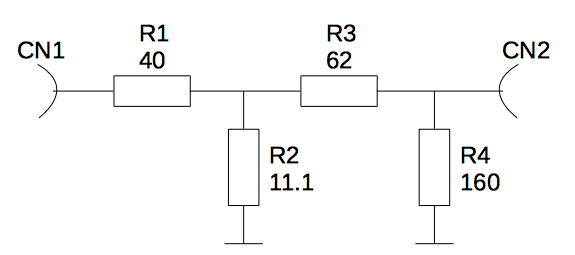

To test the ArduTrx or transceivers in general a dummy load is a handy device (https://en.wikipedia.org/wiki/Dummy_load). It is connected to the HF output of the transceiver and burns all the HF energy in a resistor so that no HF signal is transmitted. The dummy load is actually a high power 50 ohm resistor. You only have to take care that parasitic inductance and capacity is low so that it acts as a resistor even at high frequencies. That's why SMD parts are more suitable than THT resistors. If the dummy load also has an output with reduced signal levels it is also called attenuator.
The dummy load consists of 50 100 ohm 0805 resistors with a power capacity of 1/8 watts each. That sums up to 6.25 watts for the whole dummy load.
It also has an attenuator output (CN2) with a signal reduction of 22.36 dB. If this output is not used it has to be terminated with a 50 ohm resistor. Alternatively the dummy load placement option can be used which has no attenuator output.
The internal structure of the attenuator is according to this block diagram:
Input and output are connected via a SMA connector so that it easily can connect to the ArduTrx or any other hand held radio.
The hardware is released under CERN OHL v1.2
| Designator | Package | Quantity | Value / Manufacturer and Partnumber | order numbers | ||
|---|---|---|---|---|---|---|
| Reichelt | Farnell | other | ||||
| CN1,CN2 | WR-SMA-PCB | 2 | Wuerth 60312202114509 | RND 205-00509 | 1608592 | |
| R1..R50 (49 pieces) | R_0805 | 49 | 100R | SMD-0805 100 | 2447552 | |
| R15 | R_0805 | 1 | 62R | RND 0805 1 62 | 2073818 | |
| R51 | R_0805 | 1 | 160R | RND 0805 1 160 | 2694996 | |
| Designator | Package | Quantity | Value / Manufacturer and Partnumber | order numbers | ||
|---|---|---|---|---|---|---|
| Reichelt | Farnell | other | ||||
| CN1 | WR-SMA-PCB | 1 | Wuerth 60312202114509 | RND 205-00509 | 1608592 | |
| CN2 | WR-SMA-PCB | 1 | DNI | |||
| R1..R50 (50 pieces) | R_0805 | 50 | 100R | SMD-0805 100 | 2447552 | |
| R51 | R_0805 | 1 | 0R | SMD-0805 0,00 | 2309112 | |
If you have any questions contact me via email at bernhard@generationmake.de, make an issue at github or send me a message at twitter (https://twitter.com/generation_make).
Last update: 24. jul. 2019